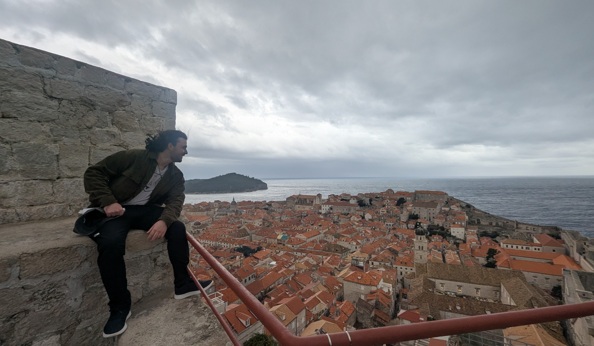
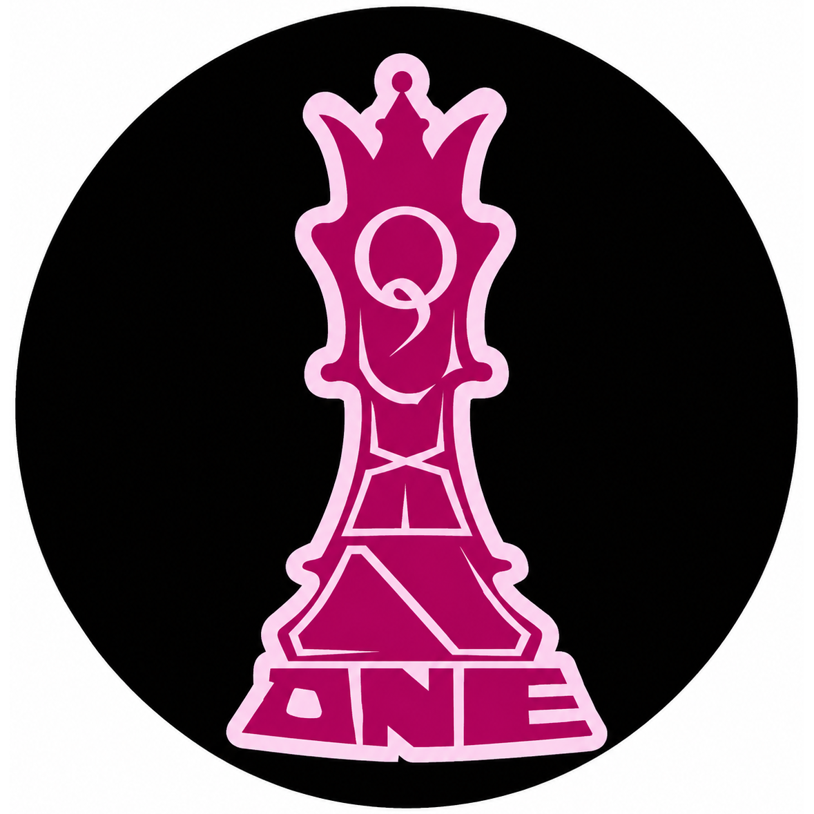
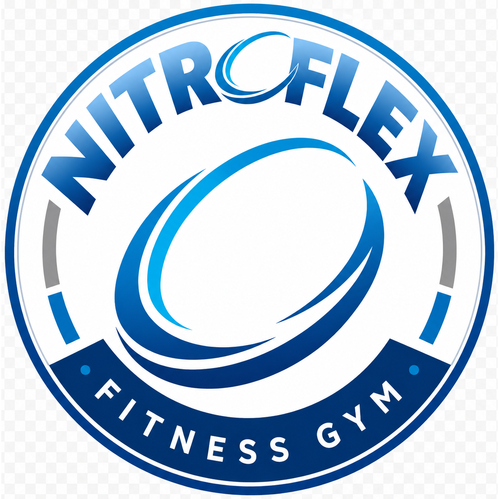
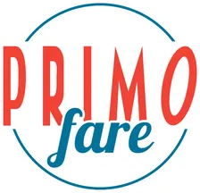

Learn
I build from curiosity first - studying Management Information Systems at RIT Saunders while exploring how AI, VR, and business tools can improve real workflows.
See more
Bret Kiefer
Agentic Intern @ Queen One
I work at the intersection of business systems, emerging AI, VR, service, and practical team leadership. My background runs from Eagle Scout project leadership to customer-facing sales, ecommerce systems, and VR product testing.
I build from curiosity first - studying Management Information Systems at RIT Saunders while exploring how AI, VR, and business tools can improve real workflows.
See moreThrough internships and project work, I focus on systems that make ecommerce, operations, databases, and team collaboration smoother and easier to scale.
Explore workEagle Scout service taught me how to organize people, solve physical problems, and keep a team moving toward a shared outcome with responsibility and follow-through.
Learn moreEducation
Current Role
Community
Product Testing

Agentic Intern
Supporting database design, collaborative workflows, and agentic business systems in an on-site Brooklyn technology environment.

Sales Representative
Engaged prospective and current members, promoted membership options, supported front office operations, handled inquiries, and contributed to retention.

AI Optimization / Software Configuration Intern
Collaborated on ecommerce system integration, software configuration, and Amazon optimization to support a smoother customer and operations experience.
Game Alpha/Beta Tester
Tested Zenith: The Last City across VR gameplay, user experience, performance, and feature functionality, providing feedback on bugs, usability, and balance.
My foundation began with earning the rank of Eagle Scout, where perseverance, responsibility, and leading by example became part of how I work. At RIT, I have expanded that foundation through academic and hands-on opportunities in management information systems, project coordination, and emerging technology.
I am especially interested in virtual reality and artificial intelligence as tools that can reshape business, education, and human interaction.
Management Information Systems student at RIT Saunders College of Business.
The Community of St. John Baptist highlighted my Eagle Scout work in March 2022. I mobilized multiple work teams for greenhouse framing, compost bin construction, hedge trimming, bed preparation, cleanup, and restoration work around St. Marguerite's Retreat House.
Read the CSJB featureBachelor of Science, Management Information Systems
Aug 2024 - May 2027Bachelor of Science, Management Information Systems, General
Jan 2026 - May 2026College preparatory and advanced high school diploma program
2019 - 2024Open to conversations about leadership, technology, AI, VR, business systems, and meaningful projects.